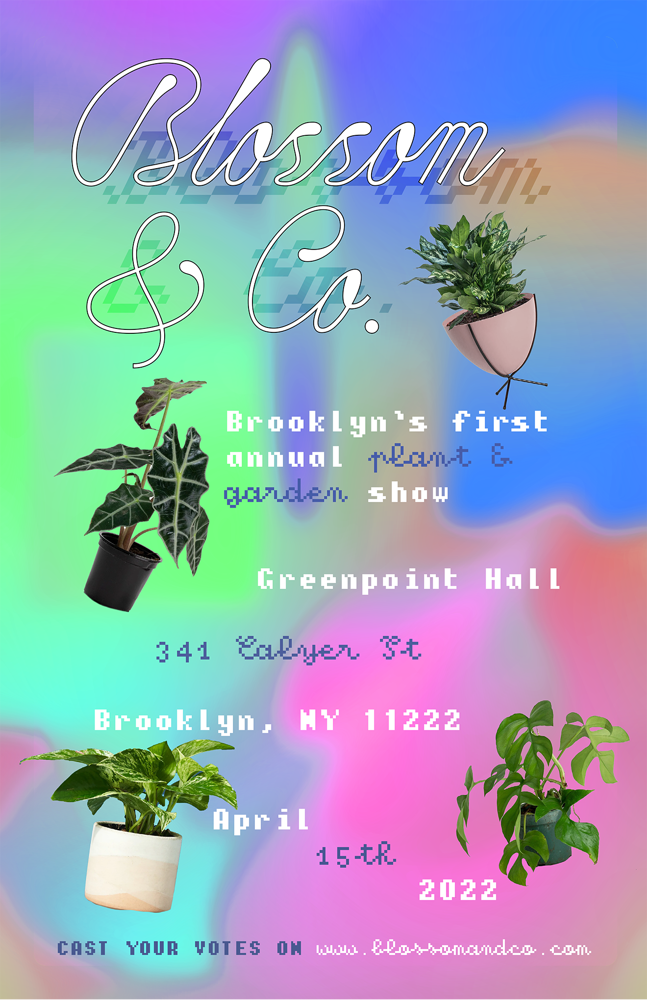
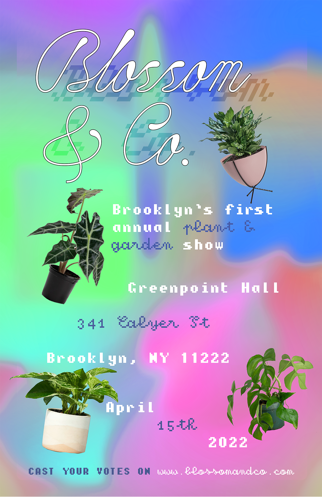
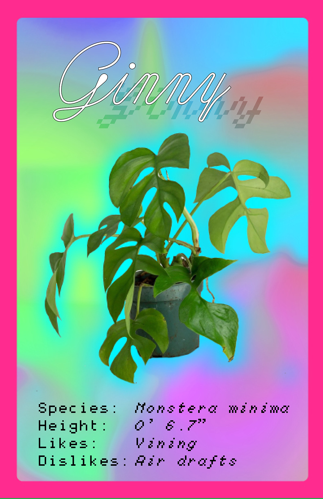
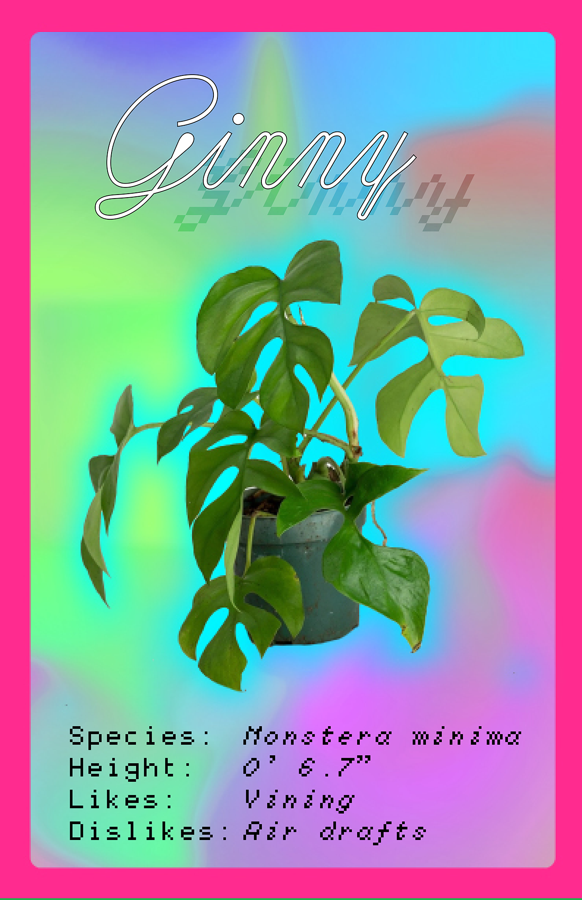

 


Blossom: Brooklyn's first annual plant and garden show
Inspired by dog shows, Blossom is a fictional plant show that allows contestants to present their plants (grown and raised on their own, of course) in a prize-based contest! Each plant has its own card describing its most pertinent traits, inspired by trading cards and dog-show pamphlets. The style is vibrant and psychedelic, approaching brutalism to complement the out-of-the-ordinary event.